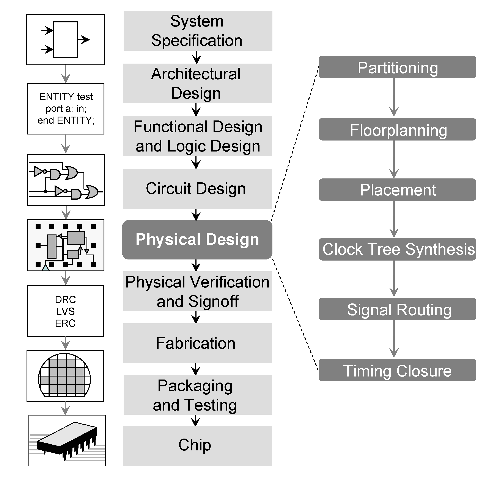
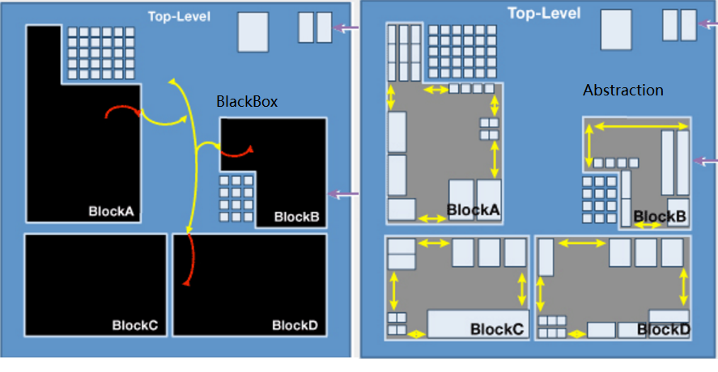
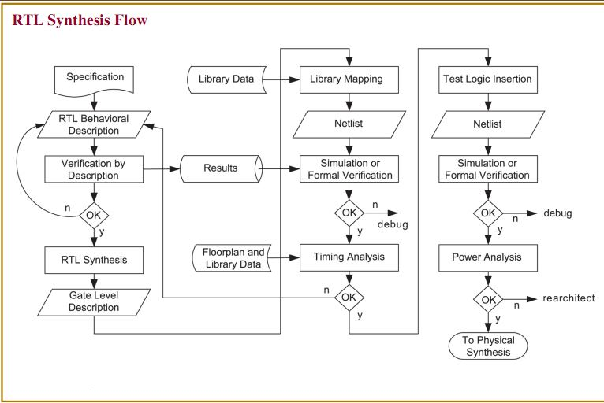
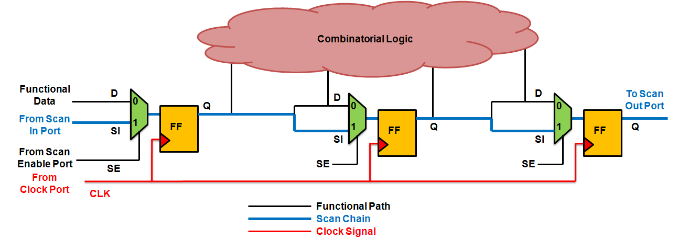
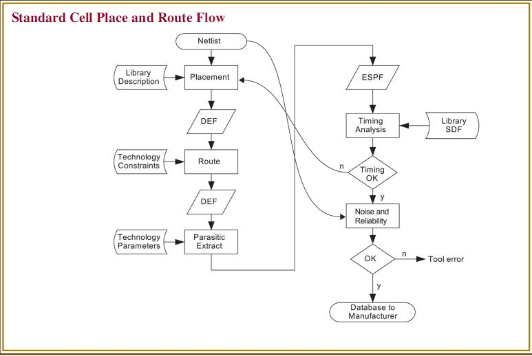
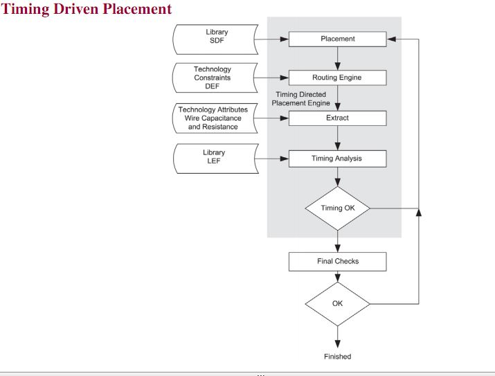
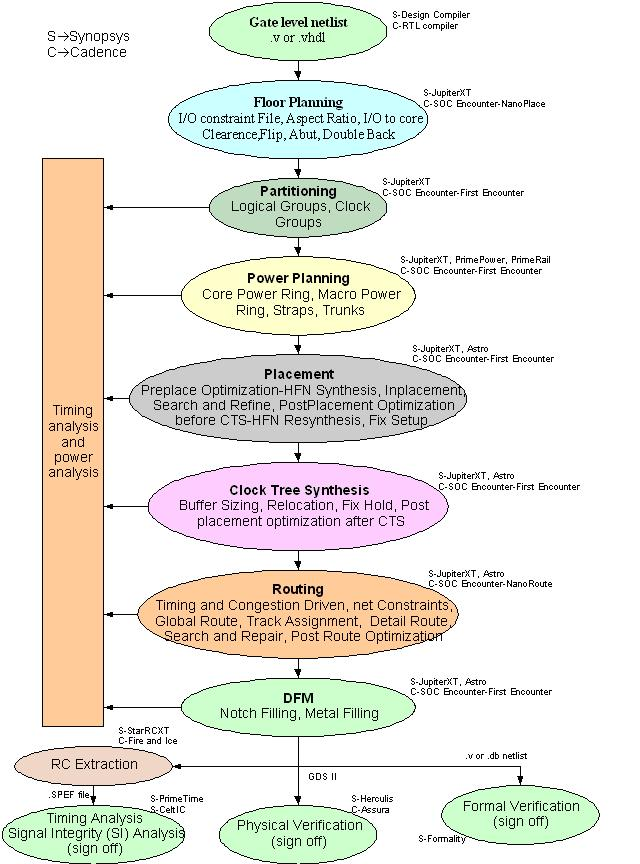

ASIC Physical Deisign Introduction
Bing YU, Oct 2016
Presenter Notes
About Me
Physics major by education, both Undergrads and Masters
Self study the IC Design course in EECS department of UC Berkely
Start my career as ASIC-PD Engineer at VIA(S3) in 2005
Now working as ASIC-PD Enginer at NVIDA
Presenter Notes
Outline
The Big Picture
The semiconductor and ASIC
How the PD fit in the overall AISC flow
In and Out of ASIC-PD
Steps of from RTL to GDSII
Commercial and In-house tools
EDA: The drive of the PD Automations
Skillset of the PD engineer
Challenges of PD Engineer
Resource and links
Reserve 10 minutes to Q&A
Presenter Notes
Semicoductor Ecosystem

Presenter Notes
ASIC's Life
Presenter Notes
Hierachical Design
Today's real ASIC is too complex and too large to fit in the EDA tools
Partitioning, Implement the blocks, integrate together
The key is budgeting and Partitioning is an art

Presenter Notes
Synthesis: Concept
Mapping the RTL to Gate-levle Netlist(NL)
Constraint is set for better Quality of Result(QoR)
Automation start in the 80s and get mature in 90s and 00s
Optimize target is performace(speed) and area
Power get into the play in 2010 as the mobile become main stream SOC
Presenter Notes
Syntheis: Chart

Presenter Notes
Design for Test
Adding part of the logic for test purpose
Test the manufacture fault
Screening the chip based on the performent
The basic DFT concept is scan shift and scan caputre
DFT is becoming the most hot area in the industry

Presenter Notes
PD Flow: Chart

Presenter Notes
PD Flow: Place
Mapping the std cell netlist to tow dementional layout
Location is is real
Net connection is virtual
Optimize target is congestion and timing
Area is key cost here, think 1% area is 1M USD

Presenter Notes
PD Flow: Routing
Based on the placment, and connect the net with real wire
More to add
Presenter Notes
PD Flow: RC Extraction
Abstract the real world physical information into R&C
Extract the Risistance and Capacitance into
annoatated
netlist
More to add
Presenter Notes
PD Flow: Timing Verification
Does the chip's performance meet the spec?
Static Timing Analysis Checking all the timing graph exhaustively
Std cells' timing is from the std cell timing lib
Wires timing is calcualted by the timing engine of EDA tools
Presenter Notes
PD Flow: Physical Verification
Does the layout qualified for Foundry to manufacture?
DRC: Design rule check
LVS: Layout vs schemtic
ERC: Electronic rule check
EM: Eletrial migration
Presenter Notes
PD Flow: Power Verificaiton
Does the chip meet the power spec
Presenter Notes
PD Flow: Formal Verificaiton
Does the netlist match the RTL?
Presenter Notes
PD Flow: ECO
Electrial Change Order
The ASIC-PD fixing bugs after the RTL freeze
Can go really messy
All the above states
Presenter Notes
Tapeout
Presenter Notes
Challenge
Time to Market
Predictbiligy
Presenter Notes
EDA Tools:

Presenter Notes
EDA vs In-house:
Not compete, but addressing the different problem
EDA is good for
Massive optimization
...
In-house tools is good for
Minor fixing things
...
Presenter Notes
Skillset
Understanding the
LEF DFT DRC ...
SPEF RC STA
Tcl scripts
-
Abustract and Modeling
Presenter Notes
Q/A
Presenter Notes
Table of Contents
Table of Contents
ASIC Physical Deisign Introduction
Bing YU, Oct 2016
1
About Me
2
Outline
3
Semicoductor Ecosystem
4
ASIC's Life
5
Hierachical Design
6
Synthesis: Concept
7
Syntheis: Chart
8
Design for Test
9
PD Flow: Chart
10
PD Flow: Place
11
PD Flow: Routing
12
PD Flow: RC Extraction
13
PD Flow: Timing Verification
14
PD Flow: Physical Verification
15
PD Flow: Power Verificaiton
16
PD Flow: Formal Verificaiton
17
PD Flow: ECO
18
Tapeout
19
Challenge
20
EDA Tools:
21
EDA vs In-house:
22
Skillset
23
Q/A
24
Help
Help
Table of Contents
t
Exposé
ESC
Full screen slides
e
Presenter View
p
Source Files
s
Slide Numbers
n
Toggle screen blanking
b
Show/hide slide context
c
Notes
2
Help
h